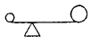
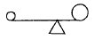
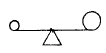
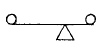
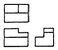
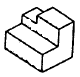
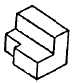
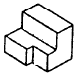
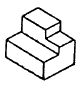

귀금속가공기능장 (2003-07-20 기출문제)
1과목: 임의 구분
1. 선사시대 신체 장식의 의미가 가장 적은 것은?
- 다른 종족과 구별하기 위한 수단
- 부의 과시나 힘을 상징하는 신분의 상징
- 아름다움을 추구하는 본능적 의미
- 제식행사등의 의식을 위한 의미
(정답률: 알수없음)

2. 신라시대에 발달된 귀걸이의 제작에 널리 사용되었던 대표적인 제작 기법은?
- 누금
- 투각
- 양감
- 상감
(정답률: 알수없음)
3. 고려시대의 금속공예에 영향을 미친 나라가 아닌 것은?
- 송
- 원
- 당
- 낙랑
(정답률: 알수없음)
4. 다음 중 조선시대 반지가 아닌 것은?
- 감입비취반지
- 박쥐문양반지
- 국화문양반지
- 매화문양반지
(정답률: 알수없음)
5. 20C 예술의 특성으로 가장 거리가 먼 것은?
- 정밀하고 자유로운 선
- 주관적 색채
- 입체파
- 기하학적 구성
(정답률: 알수없음)
6. 아트 앤드 크라프트(arts and crafts)에 대한 설명이 잘못된 것은?
- 현대공예의 사조로 윌리암 모리스에 의해 시작 되었다.
- 기계를 이용한 생산에 적극적이다.
- 산업혁명 이후 19C에 영국에서 시작되었다.
- 예술과 기술의 결합으로 수공예에 영향을 주었다.
(정답률: 알수없음)
7. 전통적 공예에서 소수계층을 위한 생활용품은?
- 대중공예
- 산업공예
- 민속공예
- 귀족공예
(정답률: 알수없음)
8. 대상물과 동일화할 수 있는 범위까지 디자인의 특질을 갖도록 간소화시키는 것은?
- 구체화
- 시각화
- 양식화
- 구상화
(정답률: 알수없음)
9. 반지 디자인에 있어서 중요한 요소가 아닌 것은?
- 형태
- 재질감
- 반사광
- 색채
(정답률: 알수없음)
10. 다음 그림 중 시각적 균형(balance)이 가장 잘 맞는 것은?




(정답률: 알수없음)
11. 쥬얼리 디자인에서 형을 입체적으로 설명하기 위한 렌더링에 가장 적합한 투시는?
- 평행투시
- 등각투상
- 3점투시
- 정투상도
(정답률: 알수없음)
12. 3가지 이상의 다른 보석을 사용하여 화려하게 꾸민 반지는?
- 칵테일 반지
- 트윈반지
- 핑키반지
- 기념반지
(정답률: 알수없음)
13. 물품이 보이는 부분의 형상을 표시하는 선은?
- 은선
- 실선
- 파선
- 중심선
(정답률: 알수없음)
14. 다음 정투상도와 같은 입체는?





(정답률: 알수없음)
15. 투시도법에서 시중심(CV)이란?
- 물체를 보는 사람눈의 위치
- 화면과 지면이 만나는 선
- 지표면에서 수직으로 세운면
- 시점의 화면상의 위치
(정답률: 알수없음)
16. 다음 색 중 무채색에 속하는 색은?
- 빨강
- 검정
- 주황
- 보라
(정답률: 알수없음)
17. 먼셀(Munsell)색체계에서 일반적으로 사용되는 색상환은?
- 12색상
- 15색상
- 20색상
- 24색상
(정답률: 알수없음)
18. 먼셀기호 "5Y 9/14"의 올바른 설명은?
- 명도가 5이다.
- 채도가 9이다.
- 색상이 14이다.
- 노랑색이다.
(정답률: 알수없음)
19. 눈 주위에 있는 세포 중 무채색만을 지각할 수 있는 것은?
- 간상체
- 추상체
- 수정체
- 홍채
(정답률: 알수없음)
20. 색채의 3속성에 따른 느낌으로 틀린 것은?
- 색채의 중량감은 명도보다는 채도에 좌우된다.
- 색채의 강약감은 명도보다는 채도에 좌우된다.
- 색채의 연하고 딱딱함은 명도, 채도에 좌우된다.
- 색채의 흥분과 진정은 색상, 명도의 영향이 있지만 주로 채도의 영향이 크다.
(정답률: 알수없음)
2과목: 임의 구분
21. 명도에 의한 배색 조화의 설명 중 가장 올바른 것은?
- 고명도끼리의 배색 - 밝고 맑은 느낌
- 중명도끼리의 배색 - 어둡고 무거우나 수수함
- 저명도끼리의 배색 - 온화하고 순수함
- 명도차가 큰 배색 - 서늘하고 가라앉는 느낌
(정답률: 알수없음)
22. 색채 조화의 공통되는 원리에 관한 설명이 잘못된 것은?
- 비 모호성의 원리는 두 색 이상의 배색이 명료하여야 한다.
- 동류의 원리는 가까운 색채끼리의 배색이다.
- 대비의 원리는 상태와 속성이 서로 모호한 점을 가지고 반대적이어야 한다.
- 유사의 원리는 서로 공통되는 상태와 속성이 있어야 한다.
(정답률: 알수없음)
23. 보석의 특수한 광학효과와 보석명이 바르게 연결된 것은?
- 성채효과 : 캐츠아이, 타이거아이
- 변채효과 : 오팔
- 유색효과 : 알렉산드라이트
- 아둘라레센스효과 : 월장석
(정답률: 알수없음)
24. 다음 중 지르콘의 연마 형태로 가장 적합한 것은?
- 혼합형
- 에메럴드형
- 라운드 브릴리언트형
- 캐보션형
(정답률: 알수없음)
25. 보석연마의 한 형태인 큐벳(Cuvette)에 관한 설명 중 올바른 것은?
- 중앙부분을 타원형으로 음각연마
- 거들 가장자리보다 위에서 양각조각
- 음각에 카메오의 디자인을 붙인 셰비의 변형
- 거들 가장자리보다 아래이며 음각조각
(정답률: 알수없음)
26. 다음 중 귀금속을 감별하기 위한 장비나 화학약품이 아닌 것은?
- 질산과 왕수
- 붕사
- 시금봉
- 시금석
(정답률: 알수없음)
27. 금광석이나 사금에 수은(Hg)을 넣고 아말감을 만들어 증류시켜 채취하는 방법은?
- 청화법
- 도태법
- 혼용법
- 왕수법
(정답률: 알수없음)
28. 은의 적당한 곳에 질산을 한 방울 떨어뜨렸을 때의 반응으로 올바른 것은?
- 정은은 회색으로 변한다.
- 은도금 제품은 암청색으로 변한다.
- 니켈은은 밝은 회색으로 변한다.
- 순은은 검정색으로 변한다.
(정답률: 알수없음)
29. 루비나 사파이어를 인조석과 식별할 때 가장 중요한 사항은?
- 경도
- 클리뷔지
- 투명도
- 인클루젼
(정답률: 알수없음)
30. 단사정계이며, 굴절률 1.655∼1.909, 비중 3.95 이며, 러시아, 호주, 경남 울주 등지에서 산출되는 보석은?
- 자수정
- 말라카이트
- 제이드
- 가닛
(정답률: 알수없음)
31. 다음 중 유기물 보석이 아닌 것은?
- 베릴
- 퍼얼
- 코럴
- 앰버
(정답률: 알수없음)
32. 보석의 연마형태 중 캐보션(cabochon)의 종류가 아닌 것은?
- 역 캐보션(reverse cabochon)
- 렌틸 캐보션(lentil cabochon)
- 조각 캐보션(carved cabochon)
- 이중 캐보션(double cabochon)
(정답률: 알수없음)
33. 낮과 밤의 색(色)이 다르게 보이는 보석(寶石)은?
- 오팔(Opal)
- 수정(Quartz)
- 알렉산드라이트(Alexandrite)
- 다이아몬드(Diamond)
(정답률: 알수없음)
34. 투어멀린(Tourmaline)은 몇월의 탄생석인가?
- 12월
- 10월
- 8월
- 6월
(정답률: 알수없음)
35. 표준 라운드 브릴리언트의 패싯명칭이 아닌 것은?
- 베젤(bezel)
- 로워 거들(lower girdle)
- 스타(star)
- 피트(pit)
(정답률: 알수없음)
36. 다음 중 구리(copper)의 특성으로 틀린 것은?
- 비중은 8.96 이다.
- 열과 전기의 전도율이 은보다 좋다.
- 용융점은 1,083℃이다.
- 내식성과 전연성이 좋다.
(정답률: 알수없음)
37. 다음 중 경금속(輕金屬)이 아닌 것은?
- 마그네슘
- 베릴륨
- 알루미늄
- 니켈
(정답률: 알수없음)
38. 은(Ag)의 물리적 성질을 설명한 것 중 잘못된 것은?
- 원자번호 : 47
- 면심입방격자
- 비중 : 8.49
- 용융점 : 960.5℃
(정답률: 알수없음)
39. 다음 중 귀금속(貴金屬)이 아닌 금속은?
- 금(Au)
- 팔라듐(Pd)
- 니켈(Ni)
- 로듐(Rh)
(정답률: 알수없음)
40. 밑바탕의 불투명 유약의 일부가 투명유약 위로 상승해 반점 무늬를 만드는 기법은?
- 투태칠보
- 요변칠보
- 분유칠보
- 형지칠보
(정답률: 알수없음)
3과목: 임의 구분
41. 알콜에 잘 녹지 않고 가열하면 백색다공성의 물질로 땜을 접합부에 신속히 침투시키는 용제는?
- 붕사
- 소다
- 아연
- 산화크롬
(정답률: 알수없음)
42. 금속용해시에 쓰이는 용제의 역할에 대한 설명 중 맞는 것은?
- 피막형성, 산화방지 및 온도보전
- 온도상승, 산화촉진 및 피막형성
- 피막제거, 산화저하 및 온도저하
- 피막보존, 산화촉진 및 온도상승
(정답률: 알수없음)
43. 땜이 끝난 일감을 붕사막과 산화막을 벗겨내기 위해 황산액에 넣을 때 사용되는 핀셋의 재질로 알맞는 것은?
- 구리
- 신주
- 전기동
- 스텐레스
(정답률: 알수없음)
44. 다음 중 물체의 길이, 지름, 두께, 깊이를 측정하는 기구는?
- 마이크로 미터(Micro meter)
- 와이어 게이지(Wire gage)
- 서피스 게이지(Surface gage)
- 버니어 캘리퍼스(Vernier calipers)
(정답률: 알수없음)
45. 귀금속가공에서 많이 쓰이는 실톱날(No.0.2)의 경우 날의 두께(mm), 날의 높이(mm), 날의 갯수를 옳게 적은 것은?
- 0.20, 0.40, 26개
- 0.26, 0.52, 21개
- 0.34, 0.71, 17개
- 0.44, 0.96, 12개
(정답률: 알수없음)
46. 금긋기 작업을 할 때 주의사항 중 틀린 것은?
- 선을 한번에 선명하게 긋는다.
- 바늘끝이 직선자에서 떨어지지 않도록 한다.
- 선의 굵기는 굵을수록 좋다.
- 선이 여러개 생기지 않도록 한다.
(정답률: 알수없음)
47. 금속의 열풀림(Annealing) 중 항온냉각에 대한 설명으로 올바른 것은?
- 열풀림한 금속을 공기 중에서 냉각시키는 방법
- 열풀림한 금속을 기름에 넣어 냉각시키는 방법
- 열풀림한 금속을 찬물에 넣어 냉각시키는 방법
- 열풀림한 금속을 가열로 안에서 천천히 냉각시키는 방법
(정답률: 알수없음)
48. 현 중량이 18.75㎏인 K18을 K14의 합금으로 만들기 위해서는 몇g의 합금(Alloy)이 필요한가?
- 5.26g
- 5.36g
- 5.48g
- 5.52g
(정답률: 알수없음)
49. 다음 중 합금의 공통된 성질은?
- 강도와 경도를 감소시킨다.
- 주조성, 내열 및 내산성이 낮아진다.
- 용융점이 높아지고, 전기 저항이 낮아진다.
- 색이 아름다워지고, 단일금속보다 대체로 우수한 성질이 나타난다.
(정답률: 알수없음)
50. 다음 중 단조(forging)기법이 아닌 것은?
- 노멀리징(normalizing)
- 벤딩(bending)
- 업세팅(up-setting)
- 세팅다운(setting down)
(정답률: 알수없음)
51. 면상감 작업과정 설명 중 잘못된 것은?
- 형태의 윤곽을 면상감으로 파낸다.
- 면의 중간 중간에 길을 내주듯이 선을 파준다.
- 중앙의 면을 차례차례 모두 밀어낸다.
- 바닥면의 전체에 흠집을 가로 세로로 내준다.
(정답률: 알수없음)
52. 산소는 공기속에 21% 존재한다. 비중은 1.1⑤로 공기보다 약간 무겁다. 액체 산소의 색깔은?
- 연노랑
- 연적색
- 연주황
- 연청색
(정답률: 알수없음)
53. 덴탈와이어(Dental Wire)의 설명 중 올바른 것은?
- 땜납을 말하며 원소기호는 Pb이다.
- 땜납을 말하며 금, 은, 납이 있다.
- 연선이며 일감을 잡아매어 마무리하는 선이다.
- 높은 고열에서 잘 견디며, 유연성이 좋은 땜용 철사이다.
(정답률: 알수없음)
54. 매몰재 파우더의 양은 플라스크 용적(容積)의 몇 배가 적당한가?
- 1.5배
- 2배
- 2.5배
- 3배
(정답률: 알수없음)
55. 다음 일반적인 주조용 왁스의 특성 중 틀린 것은?
- 수축과 팽창이 원활하다.
- 주형과 잘 분리될 수 있다.
- 60℃정도에서 저온도 조작이 가능하다.
- 69∼80℃정도의 낮은 용해 온도이다.
(정답률: 알수없음)
56. 정밀주조작업에서 왁스(wax) 물줄기 붙이기를 할 때, 다음 중 가장 적합하지 않은 것은?
- 물줄기를 정교한 일감에 붙일 때는 가급적 잘 움직일 수 있도록 일부분만 붙여준다.
- 일감과 물줄기를 붙일 때는 예각이 생기지 않도록 한다.
- 물줄기는 디자인이 단순한 곳에 붙이는 것이 좋다.
- 주형접시는 미리 저울에 달아 기록해 두고, 물줄기는 일감보다 고무받침(Rubber Base)에 먼저 붙여준다.
(정답률: 알수없음)
57. 감별하고자 하는 은의 적당한 곳을 줄로 약간 갈아서 이 때 생기는 가루에 질산을 한 방울 떨어 뜨리면 은도금 제품이나 니켈은(nikel silver)은 어떤 색으로 변하는가?
- 회색
- 백색
- 녹색
- 황색
(정답률: 알수없음)
58. 장신구 제품을 초음파 세척할 때 물의 온도는 몇도가 적당한가?
- 약 30 ∼ 40℃
- 약 40 ∼ 50℃
- 약 60 ∼ 70℃
- 약 90 ∼ 100℃
(정답률: 알수없음)
59. 귀금속가공에 수반되는 안전에 관한 사항 중 잘못된 것은?
- 희석 황산을 만들 때 물10:황산1의 비율로 한다.
- 보밍 작업시 밀폐된 공간에서 작업을 하지 않는다.
- 귀금속가공 작업시 산소 용기의 압력은 보통 10기압으로 한다.
- 원심주조 작업시 뚜껑을 잘 닫은 후 팔을 회전시킨다.
(정답률: 알수없음)
60. 작업장의 위험요소와 작업자 사이에 위치하여 작업자를 보호하는 장치로 가장 적합한 것은?
- 환기(ventilation)
- 여과(filteration)
- 방벽(barriers)
- 대체물(substitutes)
(정답률: 알수없음)